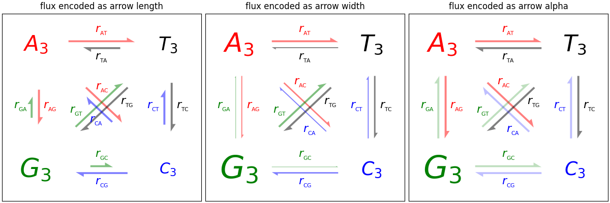

Note
Go to the end to download the full example code
Arrow Demo#
Three ways of drawing arrows to encode arrow "strength" (e.g., transition probabilities in a Markov model) using arrow length, width, or alpha (opacity).
import itertools
import matplotlib.pyplot as plt
import numpy as np
def make_arrow_graph(ax, data, size=4, display='length', shape='right',
max_arrow_width=0.03, arrow_sep=0.02, alpha=0.5,
normalize_data=False, ec=None, labelcolor=None,
**kwargs):
"""
Makes an arrow plot.
Parameters
----------
ax
The axes where the graph is drawn.
data
Dict with probabilities for the bases and pair transitions.
size
Size of the plot, in inches.
display : {'length', 'width', 'alpha'}
The arrow property to change.
shape : {'full', 'left', 'right'}
For full or half arrows.
max_arrow_width : float
Maximum width of an arrow, in data coordinates.
arrow_sep : float
Separation between arrows in a pair, in data coordinates.
alpha : float
Maximum opacity of arrows.
**kwargs
`.FancyArrow` properties, e.g. *linewidth* or *edgecolor*.
"""
ax.set(xlim=(-0.25, 1.25), ylim=(-0.25, 1.25), xticks=[], yticks=[],
title=f'flux encoded as arrow {display}')
max_text_size = size * 12
min_text_size = size
label_text_size = size * 4
bases = 'ATGC'
coords = {
'A': np.array([0, 1]),
'T': np.array([1, 1]),
'G': np.array([0, 0]),
'C': np.array([1, 0]),
}
colors = {'A': 'r', 'T': 'k', 'G': 'g', 'C': 'b'}
for base in bases:
fontsize = np.clip(max_text_size * data[base]**(1/2),
min_text_size, max_text_size)
ax.text(*coords[base], f'${base}_3$',
color=colors[base], size=fontsize,
horizontalalignment='center', verticalalignment='center',
weight='bold')
arrow_h_offset = 0.25 # data coordinates, empirically determined
max_arrow_length = 1 - 2 * arrow_h_offset
max_head_width = 2.5 * max_arrow_width
max_head_length = 2 * max_arrow_width
sf = 0.6 # max arrow size represents this in data coords
if normalize_data:
# find maximum value for rates, i.e. where keys are 2 chars long
max_val = max((v for k, v in data.items() if len(k) == 2), default=0)
# divide rates by max val, multiply by arrow scale factor
for k, v in data.items():
data[k] = v / max_val * sf
# iterate over strings 'AT', 'TA', 'AG', 'GA', etc.
for pair in map(''.join, itertools.permutations(bases, 2)):
# set the length of the arrow
if display == 'length':
length = (max_head_length
+ data[pair] / sf * (max_arrow_length - max_head_length))
else:
length = max_arrow_length
# set the transparency of the arrow
if display == 'alpha':
alpha = min(data[pair] / sf, alpha)
# set the width of the arrow
if display == 'width':
scale = data[pair] / sf
width = max_arrow_width * scale
head_width = max_head_width * scale
head_length = max_head_length * scale
else:
width = max_arrow_width
head_width = max_head_width
head_length = max_head_length
fc = colors[pair[0]]
cp0 = coords[pair[0]]
cp1 = coords[pair[1]]
# unit vector in arrow direction
delta = cos, sin = (cp1 - cp0) / np.hypot(*(cp1 - cp0))
x_pos, y_pos = (
(cp0 + cp1) / 2 # midpoint
- delta * length / 2 # half the arrow length
+ np.array([-sin, cos]) * arrow_sep # shift outwards by arrow_sep
)
ax.arrow(
x_pos, y_pos, cos * length, sin * length,
fc=fc, ec=ec or fc, alpha=alpha, width=width,
head_width=head_width, head_length=head_length, shape=shape,
length_includes_head=True,
**kwargs
)
# figure out coordinates for text:
# if drawing relative to base: x and y are same as for arrow
# dx and dy are one arrow width left and up
orig_positions = {
'base': [3 * max_arrow_width, 3 * max_arrow_width],
'center': [length / 2, 3 * max_arrow_width],
'tip': [length - 3 * max_arrow_width, 3 * max_arrow_width],
}
# for diagonal arrows, put the label at the arrow base
# for vertical or horizontal arrows, center the label
where = 'base' if (cp0 != cp1).all() else 'center'
# rotate based on direction of arrow (cos, sin)
M = [[cos, -sin], [sin, cos]]
x, y = np.dot(M, orig_positions[where]) + [x_pos, y_pos]
label = r'$r_{_{\mathrm{%s}}}$' % (pair,)
ax.text(x, y, label, size=label_text_size, ha='center', va='center',
color=labelcolor or fc)
if __name__ == '__main__':
data = { # test data
'A': 0.4, 'T': 0.3, 'G': 0.6, 'C': 0.2,
'AT': 0.4, 'AC': 0.3, 'AG': 0.2,
'TA': 0.2, 'TC': 0.3, 'TG': 0.4,
'CT': 0.2, 'CG': 0.3, 'CA': 0.2,
'GA': 0.1, 'GT': 0.4, 'GC': 0.1,
}
size = 4
fig = plt.figure(figsize=(3 * size, size), layout="constrained")
axs = fig.subplot_mosaic([["length", "width", "alpha"]])
for display, ax in axs.items():
make_arrow_graph(
ax, data, display=display, linewidth=0.001, edgecolor=None,
normalize_data=True, size=size)
plt.show()